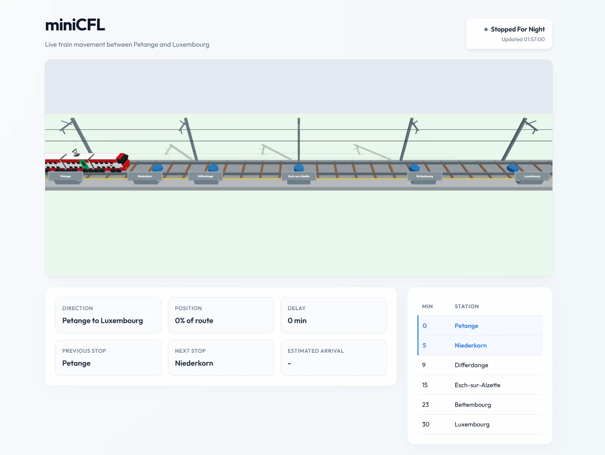
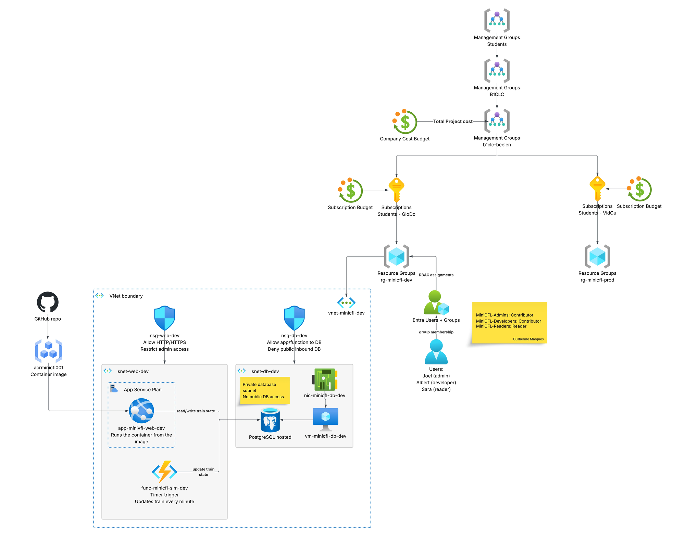

A train you can see, an environment you can administer
MiniCFL is my AZ-104 (Azure Administrator) demonstration project for the BTS Cloud Computing course. The visible part is deliberately small: a simulator that moves one CFL train along the real Petange → Luxembourg line and shows its live position, next stop, delay and timetable. The train exists to give every Azure resource a concrete reason to be there. Around it I built — and administer — a complete environment covering the five AZ-104 skill areas, deployed across a development and a production environment in two different Azure regions.

The MiniCFL web app: the train lane, six stations, the live status panel and the timetable.
Who built what
Three of us split the environment by AZ-104 skill area, so each part had a clear owner.
Donnny
Identity & governance — the management-group hierarchy, RBAC role assignments, users and groups, and budgets.
Marios
Networking & database — the NSGs, the VNet, and the VM running the PostgreSQL database.
Guilherme (me)
Compute, app & monitoring — the containerised web app on App Service, ACR, the Azure Function timer, and Azure Monitor.
What runs underneath
The environment is organised the way the exam expects: governance and identity first, then compute, networking, and operations. Each layer maps to an AZ-104 skill area and to evidence collected in the final report.
Identity & Governance
- Management-group hierarchy: Tenant Root → Students → B1CLC → b1clc-beelen, with two student subscriptions (GloDo, VidGu) underneath — a real governance scope above the resource-group level.
- Least-privilege RBAC: Entra ID users and groups for admins, developers and readers, with roles assigned at resource-group scope (Contributor / Reader) instead of handing out Owner.
- Policy, tags & budgets: Azure Policy enforces allowed regions and required tags; budget alerts protect the student credit before it runs out.
Compute
- Containerised web UI: the simulator is built as a Docker image, pushed to Azure Container Registry, and run on App Service (Web App for Containers) — the live
app-minicfl-web-devsite. - Database VM (IaaS): a small Azure VM with a managed disk hosts the PostgreSQL database that stores the route, stops, train state and update history.
- Azure Function timer: a timer-triggered function fires every minute, recalculates the train's position, segment progress and delay, writes the new state to the database, and logs each run.
Networking
- Segmented VNet:
vnet-minicfl-devsplits a web subnet (snet-web-dev) from a database subnet (snet-db-dev) so the two tiers are isolated. - NSG rules:
nsg-web-devallows HTTP/HTTPS and restricts admin access;nsg-db-devallows the app/function to reach the DB but denies all inbound public database access — proven with connectivity tests. - Network Watcher: connectivity checks confirm the web tier is reachable while the database stays private inside the VNet.
Monitoring & Operations
- One dashboard: Azure Monitor collects metrics for the VM, the App Service and the Function in a single view of platform health.
- Alerts & action groups: alert rules wired to an action group fire when the app is unavailable or the timer stops updating the train.
- Logs & cost: Log Analytics queries trace each simulation update, while budget alerts track spend against the project's total cost.
The simulation itself
- Real route: Petange → Niederkorn → Differdange → Esch-sur-Alzette → Bettembourg → Luxembourg, then back, on a roughly 30-minute timetable.
- Train state model: direction, previous/next stop, status (
between_stops,waiting_at_station,late,returning,stopped_for_night…), segment progress %, planned vs. estimated arrival, and delay in minutes. - Visual lane: the UI shows the line, station dots, the moving train, direction, planned/estimated arrival, a delay badge and the last update time.
The deployed Azure architecture

The real deployed environment: management groups and budgets, subscriptions, RBAC, the VNet boundary with NSGs, ACR, the container web app, the Function timer and the PostgreSQL database VM.
Why I built it this way
The AZ-104 course needed a demonstration, not just notes. I wanted a scenario that was small enough to finish but real enough to administer properly, so I picked something familiar: the CFL train I actually take, running the Petange → Luxembourg line.
The train is only the excuse. The point is the Azure environment around it: identity and access, governance, compute, networking, monitoring and cost control. Every resource exists because the simulator needs it — the Function updates the train, the VM stores it, the network protects it, monitoring watches it.
I deployed it twice — dev in France Central and prod in Sweden Central, across two student subscriptions — and mapped each resource back to an AZ-104 skill area with screenshots in the report. The goal isn't only that the app works, but that I can explain why every piece is there.
What I learned
Least privilege over Owner
Assigning roles at resource-group scope and testing what a Reader actually can't do made permissions click far more than handing out Owner ever would.
Keep the database private
Splitting subnets and proving with NSGs that the DB is unreachable from the internet taught me network security by doing, not by reading.
Tag and budget everything
On student credit, budget alerts and consistent tags are not optional — they are how you avoid waking up to an empty subscription.
Scope under pressure
We built this under real time pressure, so we cut what didn't fit — a planned Load Balancer demo stayed on the backlog. Knowing what to drop to still ship a coherent environment is its own skill.